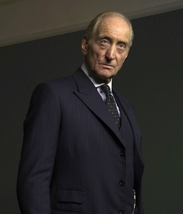

Lawrence
Lawrence
Wargrave
Judge Lawrence Wargrave
A recently retired judge. Wargrave is a highly intelligent old man with a commanding personality. As the characters begin to realize that a murderer is hunting them, Wargrave’s experience and air of authority make him a natural leader for the group. He lays out evidence, organizes searches, and ensures that weapons are locked away safely. Wargrave’s guilt is revealed at the end of the novel in a confession that illuminates the characteristics that drive him to commit the series of murders: a strong sense of justice combined with a sadistic delight in murdering.